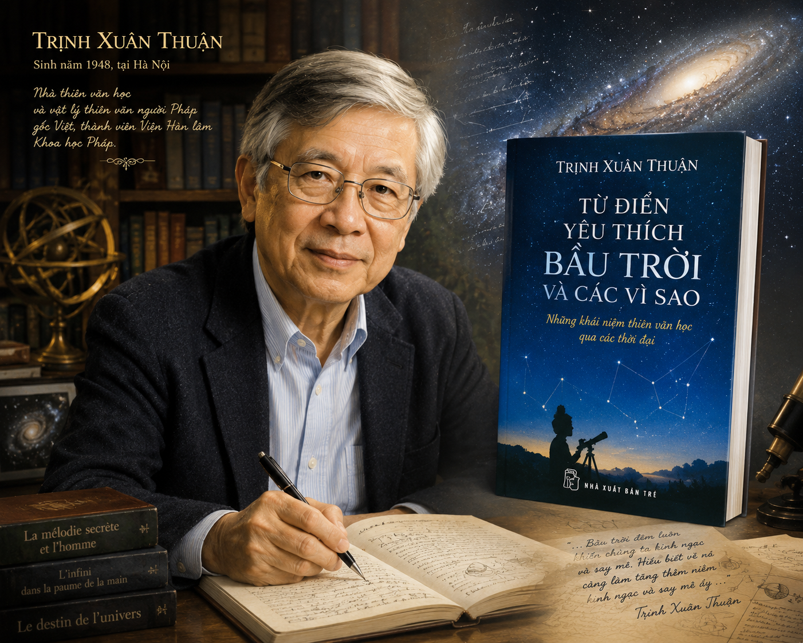
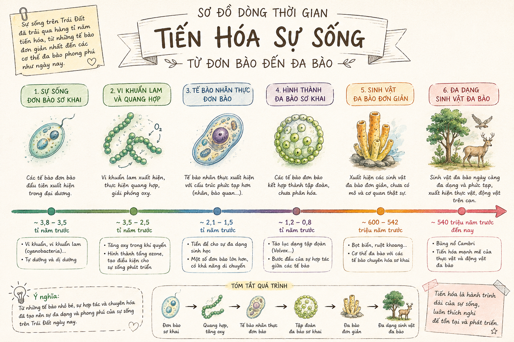

VĂN BẢN 1: SỰ SỐNG VÀ CÁI CHẾT
(Trích Từ điển yêu thích bầu trời và các vì sao - Trịnh Xuân Thuận)
"Khi quan sát những biểu hiện cụ thể của sự sống trên Trái Đất, điều gì đã khiến bạn suy nghĩ, băn khoăn hoặc tò mò?"
I TÁC GIẢ VÀ TÁC PHẨM
1 Tác giả Trịnh Xuân Thuận
• Năm sinh: 1948 tại Hà Nội, là nhà vật lý học thiên văn người Mỹ gốc Việt, giáo sư Đại học Virginia (Hoa Kỳ).
• Phong cách sáng tác: Viết các tác phẩm khoa học bằng tiếng Pháp với văn phong tinh tế, giàu chất thơ và tràn đầy cảm xúc nhân văn, giúp các vấn đề khoa học vũ trụ trở nên gần gũi với công chúng.
• Tác phẩm tiêu biểu: Số phận của vũ trụ – Bích Băng và sau đó (1992), Hỗn độn và hài hoà (1998), Những con đường của ánh sáng (2007), Vũ trụ và hoa sen (2011)...
2 Tác phẩm "Từ điển yêu thích bầu trời và các vì sao" & Văn bản
• Xuất xứ: Trích từ cuốn Từ điển yêu thích bầu trời và các vì sao (NXB Tri thức, Hà Nội, 2017).
• Thể loại: Văn bản thông tin tổng hợp (kết hợp các yếu tố tự sự, miêu tả, biểu cảm và nghị luận).

Hình 1: Tác giả Trịnh Xuân Thuận và tác phẩm Từ điển yêu thích bầu trời và các vì sao
II ĐỌC - HIỂU VĂN BẢN
1 Tiến trình phát triển của sự sống trên Trái Đất
📌 Định luật phát triển của sự sống:
Lịch sử sự sống trên Trái Đất diễn ra đồng thời theo 2 hướng chính:
- Hướng dọc: Thể hiện bằng sự phức tạp hóa ngày càng tăng theo tuổi Trái Đất (từ vi khuẩn đơn bào đến con người phức tạp).
- Hướng ngang: Thể hiện bởi sự đa dạng kinh ngạc của sự sống và sự đa dạng hóa ngày càng lớn của các loài theo thời gian.

Hình 2: Sơ đồ dòng thời gian tiến hóa sự sống từ đơn bào đến đa bào
2 Mối quan hệ giữa sự sống, đấu tranh sinh tồn và cái chết
Tác dụng: Đảm bảo tính chính xác, khách quan, khoa học của văn bản thông tin, nâng cao độ tin cậy tri thức.
💡 Quy luật Sinh tồn & Sự Tuyệt chủng:
• Tuyệt chủng là một phần của tiến hóa: Sự xuất hiện của các dạng động vật mới không đồng nghĩa với đào thải hoàn toàn loài cũ, nhưng khi môi trường biến đổi lớn, sự tuyệt chủng xảy ra (Ví dụ: bọ ba thủy tuyệt chủng cuối kỉ Péc-mi; khủng long tuyệt chủng do va chạm tiểu hành tinh cách đây 65 triệu năm).
• Vai trò của Cái Chết: Cái chết giải phóng các "ô sinh thái", nhường không gian và tài nguyên cho các loài mới nhanh chóng chiếm giữ và phát triển. Cái chết cho phép sự sống tiến lên và tự hoàn thiện.
3 Sự khác biệt giữa sinh vật và vật vô sinh
| Vật vô sinh | Sinh vật sống |
|---|---|
| Không cần đấu tranh sinh tồn. | Phải đấu tranh liên tục để sinh tồn. |
| Không bị đe dọa bởi sự tuyệt chủng. | Luôn đối mặt với nguy cơ tuyệt chủng và cái chết. |
| Không tuân theo quy luật chọn lọc tự nhiên. | Tuân theo quy luật chọn lọc tự nhiên nghiêm ngặt. |
| Đặc điểm cơ bản giữ nguyên qua hàng tỷ năm. | Bật dậy bằng sức sáng tạo, tiến hóa và tự hoàn thiện. |
III NGHỆ THUẬT VÀ THÔNG ĐIỆP
📘 EM CÓ BIẾT?
Kỉ Péc-mi (Permi) kéo dài từ khoảng 299 đến 251 triệu năm trước. Đợt tuyệt chủng cuối kỉ Péc-mi được coi là thảm họa tuyệt chủng lớn nhất lịch sử Trái Đất, xóa sổ tới 96% số loài sinh vật biển và 70% số loài sinh vật trên đất liền lúc bấy giờ!
🌱 EM CÓ THỂ
Tự vẽ một sơ đồ tư duy hoặc mốc thời gian thể hiện các bước phát triển quan trọng của sự sống trên Trái Đất, sau đó trình bày trước lớp góc nhìn cá nhân về trách nhiệm bảo vệ sự đa dạng sinh học của con người hiện đại.
⚠️ LƯU Ý
Trong các văn bản thông tin tổng hợp, yếu tố tự sự và biểu cảm chỉ đóng vai trò hỗ trợ truyền tải. Mục tiêu cốt lõi vẫn là cung cấp tri thức chính xác, trung thực về quy luật của vũ trụ và tự nhiên.
💰 AI LÀ TRIỆU PHÚ 💰
Chinh phục 10 câu hỏi để trở thành triệu phú tri thức GDPT 2018!
V BÀI TẬP TỰ LUẬN TÍNH TOÁN CỦNG CỐ
Bài (Phân tích thông điệp triết học - Nghị luận):
Từ văn bản "Sự sống và cái chết", anh/chị hãy viết một đoạn văn ngắn (khoảng 150-200 chữ) suy nghĩ về câu nói: "Cái chết cho phép sự sống tiến lên".
Gợi ý đoạn văn mẫu:
"Khái niệm 'cái chết' thường gợi ra cảm giác mất mát, đau thương, nhưng dưới góc nhìn khoa học và triết học của Trịnh Xuân Thuận, cái chết lại là một mắt xích thiết yếu cho tiến trình phát triển tự nhiên. Tác giả đã khẳng định: 'Cái chết cho phép sự sống tiến lên'. Thật vậy, nếu các sinh vật cổ xưa không tuyệt chủng hay qua đi, Trái Đất sẽ không đủ nguồn sống và 'ô sinh thái' để đón nhận các dạng sống mới phức tạp, hoàn thiện hơn. Sự ra đi của khủng long đã mở đường cho kỷ nguyên phát triển bùng nổ của động vật có vú và con người. Cái chết loại bỏ cái cũ đã lỗi thời, nhường chỗ cho cái mới sáng tạo và thích nghi tốt hơn. Nhận thức được quy luật này giúp chúng ta biết trân trọng từng khoảnh khắc được sống, có trách nhiệm cống hiến giá trị cho đời và học cách nhìn nhận quy luật sinh - tử của vũ trụ với thái độ thanh thản, bao dung."